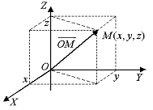

5.1.1. Уравнение поверхности
Аналитическая геометрия ставит своей задачей изучение
геометрических объектов с помощью аналитического метода. Геометрические
объекты: точка, линия, поверхность.
Точка. Задается аналитически совокупностью чисел: одного
– для точки на прямой; двух – для точки на плоскости; трех – для точки в
пространстве. Эти числа называются координатами.

Введем в пространстве декартову прямоугольную систему
координат, т.е. зададим начало координат  ,
базис
,
базис  , оси
, оси ,
,  ,
,  .
.
,
базис , оси, , .Декартовыми координатами точки  называются декартовы координаты ее
радиус-вектора
называются декартовы координаты ее
радиус-вектора  .
.
называются декартовы координаты ее
радиус-вектора .Более сложные геометрические объекты задаются уравнениями,
связывающими координаты точек, принадлежащих данному объекту. Эти уравнения
реализуют условия принадлежности точки данному геометрическому объекту.
Пусть задано уравнение:  и поверхность
и поверхность  . Поверхность есть
геометрическое место точек, определяемое уравнением ,
если координаты любой точки поверхности удовлетворяют
уравнению , а координаты любой точки, не лежащей
на ней, - не удовлетворяют.
. Поверхность есть
геометрическое место точек, определяемое уравнением ,
если координаты любой точки поверхности удовлетворяют
уравнению , а координаты любой точки, не лежащей
на ней, - не удовлетворяют.
и поверхность . Поверхность есть
геометрическое место точек, определяемое уравнением ,
если координаты любой точки поверхности удовлетворяют
уравнению , а координаты любой точки, не лежащей
на ней, - не удовлетворяют.Поверхность, определяемая в декартовой системе координат
алгебраическим уравнением  –й степени, называется
алгебраической поверхностью –го порядка.
–й степени, называется
алгебраической поверхностью –го порядка.
–й степени, называется
алгебраической поверхностью –го порядка.